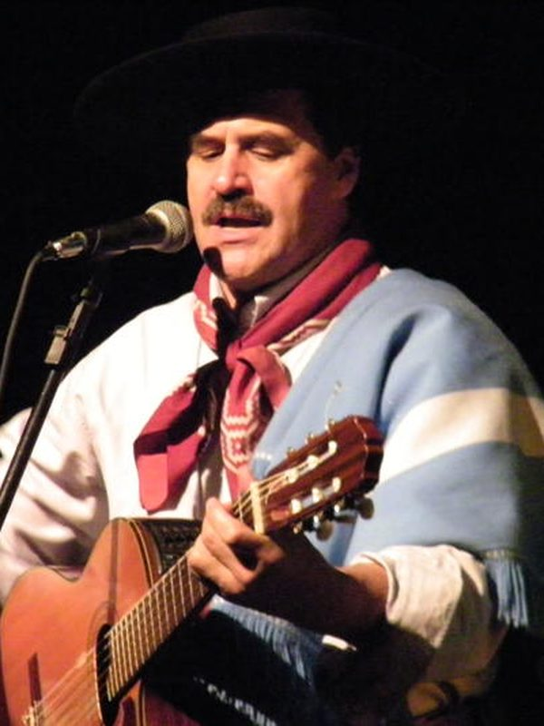

Elton Saldanha
Natural de Itaqui e radicado em Porto Alegre, é cantor, compositor, instrumentista e jornalista. Presidiu a Fundação Instituto Gaúcho de Tradição e Folclore (1987–1991) e venceu praticamente todos os grandes festivais do estado. Seu repertório alterna a exaltação de uma identidade gaúcha heroica com canções sobre a ancestralidade indígena, missioneira, negra e quilombola.